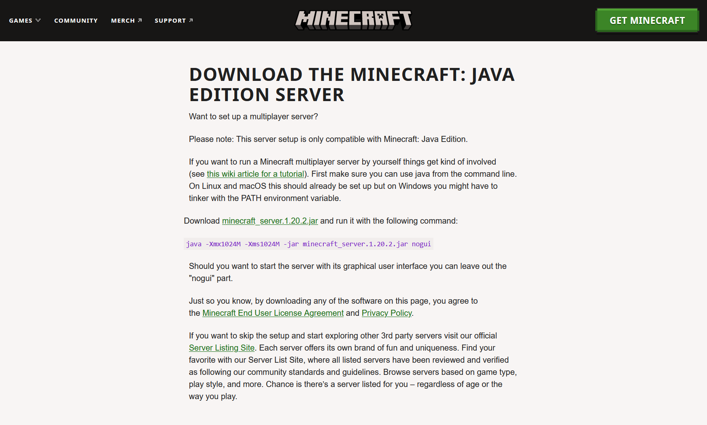

What Is a Minecraft Server?
If you've ever wanted to play Minecraft with a group of your friends, this guide is for you! A Minecraft server lets you invite others to join a world and play together. This guide will show you how to create, launch, and host your server for free, using your home computer. You'll also learn how to port forward the server, allowing your friends to connect and play from anywhere on the globe!
Required Materials:
Before you begin, make sure that you have the following items:
- A computer capable of running Windows 10
- A router provided by your internet service provider or personally owned (this process will not work on public or university wireless networks)
- Minecraft Java Edition
- Java Runtime Environment Version 17.0.6 installed on your computer (A free download can be found here, note that other versions may work, but this guide uses version 17.0.6)
If you have these items, you're ready to get started!
Note: The .gifs on this site can be opened in a new tab to be resized and zoomed if needed.
- Downloading the server file
To download the server file, visit Minecraft's server download page and click "Download minecraft_server.X.XX.X.jar".
 - Creating the server folder
- Moving the server file to the new folder
Navigate to wherever your browser's downloads are stored. Then, move the downloaded server.jar file to the new server's folder.

- Finding the server in Command Prompt
Open Command Prompt by typing "cmd" in the windows start menu. Then, use the following commands to navigate out of the user folder and into your server's folder:
- cd..
- cd..
- cd Minecraft Server

- Pasting the Start Command
Next, return to the minecraft website and copy the start command shown on the website. Paste this into your command prompt window.

- Modifying the Start Command
While the command you pasted forms the backbone of your final start command, a few things need to be edited to make your server run well. Change both "1024" values to "2048". These values tell the computer how much Random Access Memory (RAM) to dedicate to the server while its running. Changing the value from 1024 to 2048 will give your server much more room to run smoothly on your computer without you noticing much of a performance decrease in your everyday computer usage.
Secondly, change the section "minecraft_server.X.XX.X.jar" to simply read "server.jar". This is because the file you downloaded from the Minecraft website was named server.jar. The file name and the name in the start command must match in order for the server file to open.
- Starting the Server
Press enter to start the server. It may take a little bit to finish starting.

- Agreeing to the EULA
Notice that it failed to start the server. This is because the EULA must be agreed to. Check the server folder again and notice that a few new folders and files have populated there. Click on "eula.txt" and change "false" to "true". Save and exit the file.

- Restarting the Server
Having agreed to the EULA, return to the command prompt window and re-enter the start command to restart the server.

- Visiting Your Router's Website
In order to allow people outside of your local network to connect to your Minecraft server, you'll need to port forward it. You can do this by visiting your router's website. Check the back of your router for a default gateway (It might look something like 192.168.0.1), and paste it into any browser. If asked for a username and password, check your router for a sticker with that information.

- Creating a New Port
While the specific layout of each internet provider's default gateway site may differ, each should have a tab for port forwarding. Once you find it, create a new port. The default port for a Minecraft server is 25565, so that is the port that this guide will be using. Make the port follow TCP and UDP protocols, and set both public and private ports to 25565. When asked to enter your local IP, find it in a new command prompt window by typing "ipconfig". Your local IP address will be listed on the "IPv4 Address" line.
Note: local IP addresses are private information and are a risk to the security of your network and computer if made public. As such, some obfuscations have been made in the below .gif to hide local addresses on the network.

- Finding Your Public IP Address
With the port forwarded, the next step is to find your public IP address. This address is what you will tell Minecraft to connect to, and will allow you to play on your server. To find your public IP address, type "what is my IP address" into the search engine of your choice. The number that appears will be your IP address.
Note: Once you have your public IP, it is STRONGLY urged that you not give it out publicly and advertise with it. Much like local IP's, giving your public IP out publicly is a security risk to your home network (albeit not as severe of a risk). Only give out your IP to people you would like to play with and trust.

- Connecting To Your Server
Now that you have your public IP address, you have everything you need to connect to your server. Start Minecraft and go to the Multiplayer menu. There, click "Add Server". Type in the IP address that was found via the browser search, and click "Done". Then, find the new server in the window and click the play button. See this process in action by viewing the video below. Once you've loaded in, Congratulations! You've successfully created a minecraft server that your friends can join from anywhere, and you've learned some important coding and web skills along the way!
- Server Properties
Below is a list of commonly adjusted properties and their functions in order to help you customize your server to your liking
Property Function gamemode Change to play in creative or survival. Add in the preferred gamemode after the "=". spawn-protection Specifies the radius of blocks around the server's spawnpoint that cannot be broken. Change to 0 to eliminate the spawn-protection entirely. difficulty Changes the difficulty level of the server. Set to peaceful, easy, normal, or hard. pvp Allows players to deal damage to each other. Set to "true" to enable this setting, or "false" to disable it. max-players Specifies how many players can be on your server at any one time. Adjust this depending on how much RAM you have dedicated to your server. level-seed Allows you to insert a seed for a world to generate from if you have a preferred one. motd Sets the message that will appear in the Minecraft server browser. - Server Commands
Server commands let you adjust the server or change gameplay elements while you are in-game. They can be performed by typing "/" followed by the command and its new setting. Check the table below for a list of commonly-used commands.
Command Function /gamemode Change to play in creative, survival, spectator, or adventure. Press space after typing the command and enter your preferred gamemode. /op <u> Where <u> is a player's username, grants that user host privileges. /time set Changes the time of day on the server. Add a space after the command and type "day" for sunrise, "noon" for noon, "dusk" for sunset, and "night" for night. You can also type a number for more specific times, ranging from 1000-24000. /weather Changes the weather on the server. Add a space and type "clear" to stop rain, "rain" to start rain, or "storm" to start a storm. /gamerule mobGriefing Add a space and type "true" to allow mobs like creepers to destroy blocks. Type "false" to disable this ability. /tp <u1> <u2> Where <u1> <u2> stand in for two usernames, teleports <u1> to <u2>'s location
Open File Explorer and create a new folder in your C: drive. Name it anything you'd like, but for the purpose of the guide, I'll name mine "Minecraft Server".

Was this Article Helpful?
Related Articles
Minecraft: Java Edition Hotkeys
Minecraft: Java Edition - Debug Menu
Mods for Minecraft: Java Edition